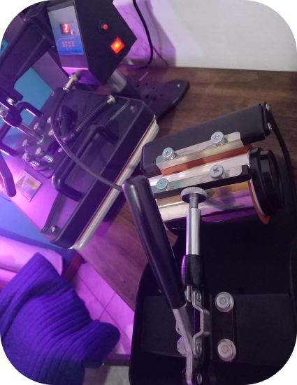

La sublimación es un proceso de estampado que se puede utilizar sobre infinidad de materiales. En la fisica, la sublimación es el cambio de un material de un estado sólido a uno gaseoso directamente. Y eso es precisamente Lo que ocurre con la tinta de sublimación. En el ámbito textil, esta técnica consiste en utilizar un papel especial el cual se imprime con tinta de sublimación y que luego ésta se transfiere a las telas sometiéndola a determinado tiempo y temperatura. En este proceso, la tinta se vuelve gaseosa abandonando el papel y se transfiere a las telas penetrando en sus fibras. El proceso finaliza con la tinta nuevamente en estado sólido en las telas dejando una imagen definida, fija y duradera sobre el material.
¿Sabías que la sublimacion textil consiste en utilizar un papel especial el cual se imprime con tinta de sublimación, que luego se transfiere a las telas? La tinta se vuelve gaseosa abandonando el papel y se transfiere a las telas penetrando en sus fibras. El proceso finaliza con la tinta nuevamente en estado sólido en las telas dejando una imagen definida, fija y duradera sobre el material.
